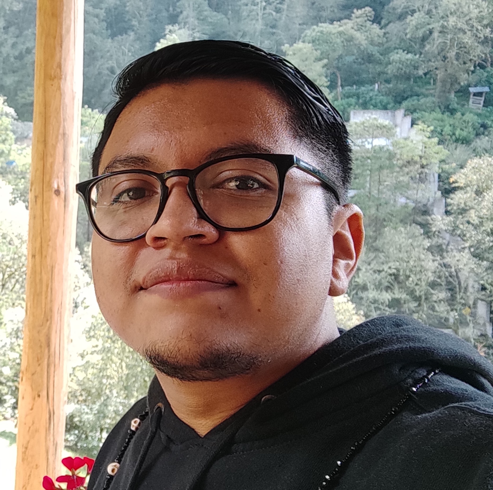

CV de Diego Medina
Ingeniero en Informática
Mas de 5 años de experiencia en soporte de todos los niveles
Educación
- Ingenieria en Informática
- 2011-2016. Instituto Tecnológico Superior de Irapuato

Experiencia profesional
- Jefe de TI en Universad Incarnate Word Campus Bajio
- Marzo 2022- Noviembre 2023. Mantener la operabilidad y administrar la infraestuctura tecnológica de la institución
- Auxiliar de TI en Liceo Cervantino
- Junio 2018- Marzo 2022. Soporte de primer y segundo nivel y administracion del ERP institucional
- Supervisor en Mediacom Irapuato
- Septiembre 2017- Junio 2018. Supervicion de instaladores, control de inventario y mantenimiento de red aerea de fibra optica
- Tecnico en Conecta Redes e infraestuctura
- Septiembre 2016- Enero 2017. Instalacion de infraestuctura de red en diferentes empresas